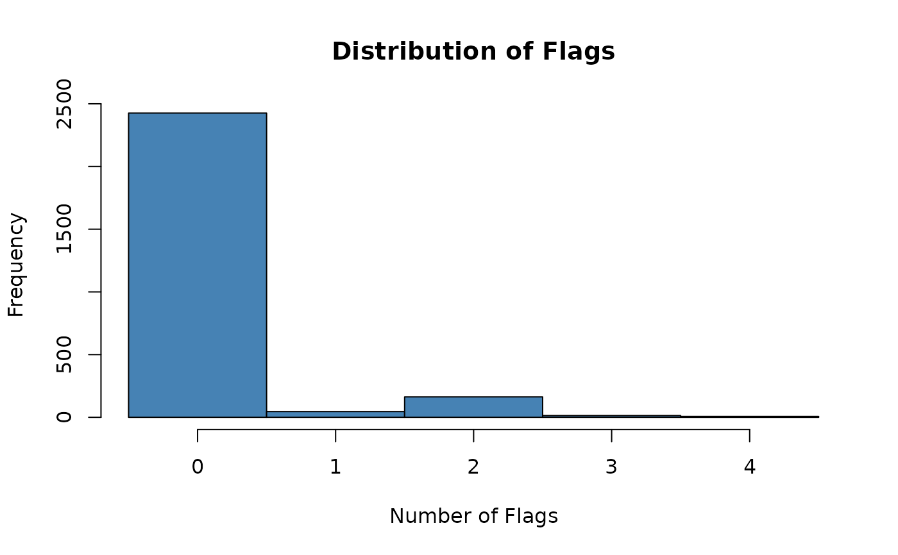

This function returns the original data frame with an additional column summarizing the total number of flags triggered by each record.
Usage
count_flags(
occ = NULL,
flagged_dir = NULL,
output_format = ".gz",
flags = "all",
additional_flags = NULL
)Arguments
- occ
(data.frame or data.table) a dataset containing occurrence records that has been processed by one or more flagging functions. See Details for available flag types.
- flagged_dir
(character) optional path to a directory containing files with flagged records saved using the
remove_flagged()function. Default isNULL.- output_format
(character) output format used to read the removed records. Options are
".csv"or".gz". Only used whenflagged_diris notNULL. Default is".gz".- flags
(character) the flags to be summarized. Use
"all"to display all available flags. See Details for all options. Default is"all".- additional_flags
(character) an optional named character vector with the names of additional logical columns to be used as flags. Default is
NULL.
Value
The original data frame with an additional column summarizing the total number of flags triggered by each record.
Details
This function expects an occurrence dataset that has already been processed
by one or more flagging routines from RuHere or related packages such as
CoordinateCleaner. Any logical column in occ can be used as a flag.
The following built-in flag names are recognized:
From RuHere:
correct_country, correct_state, cultivated, florabr, faunabr,
wcvp, iucn, bien, duplicated, thin_geo, thin_env, consensus
From CoordinateCleaner :
.val, .equ, .zer, .cap, .cen, .sea, .urb, .otl, .gbf,
.inst, .aohi
Users may also supply additional logical columns using
additional_flags.
Examples
# Load example data
data("occ_flagged", package = "RuHere")
# Count flags
sum_flags <- count_flags(occ = occ_flagged)
# Check the distribution of flags per record
table(sum_flags$total_flags)
#>
#> 0 1 2 3 4
#> 2426 46 163 14 7
# Plot histogram
hist(sum_flags$total_flags,
main = "Distribution of Flags",
xlab = "Number of Flags",
col = "steelblue",
breaks = seq(-0.5, max(sum_flags$total_flags) + 0.5, by = 1))
